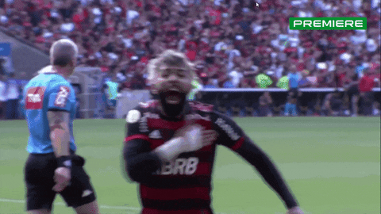
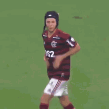
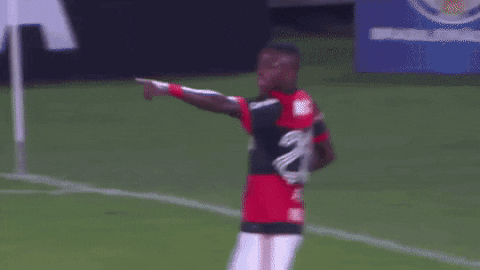
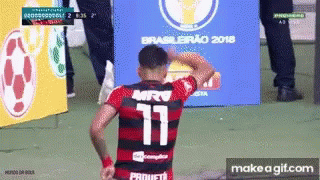

-
Gabigol #Legend
- Penalti
- Psicológico
Por mais que não viva boa fase atualmente, ainda sim tem constância em gols.
-
BH #Legend

- Velocidade
- Lesão
2019 viveu o auge de sua carreira, fazendo belas arrancadas e finalizando de forma indefensável.
-
Arrasca #Legend

- Criativo
- Uruguaio
Um jogador com nível técnico elevado, tem ótima visão de jogo, porém nasceu no país errado.
-
ER7 #Legend

- Drible
- Defesa
Apesar da sua idade avançada não fica para trás dos outros jogadores no ataque, consegue fazer gols e criar ótimas oportunidades.
-
Rafinha #Legend
- Liderança
- Traíra
Em 1 ano foi o suficiente no clube para demonstrar sua habilidade pelas laterais do campo dando inúmeras assistencias e criando ótimas jogadas
-
Petković #Idol

- ÍDOLO
Tinha como principal característica as batidas de faltas impecáveis, fazendo com que faltas perto da área seja motivo claro para gol.
-
Imperador #Idol

- ÍDOLO
Dono de uma canhota potente, cabeceio diferenciado e uma presença sem igual na área, sua maior qualidade é ser flamenguista nato.
-
Ronaldinho #Idol

- ÍDOLO
Apesar de não ser um ídolo do flamengo, é um ídolo do futebol brasileiro, tendo uma passagem curta pelo flamengo que ajudou o clube a conquista o campeonato carioca.
-
Vini JR #Jóia
- JÓIA DA BASE
Com certeza é a maior revelação do flamengo nos últimos tempos, construindo uma carreira incrível na espanha conquistando todos títulos possíveis.
-
Paquetá #Jóia
- JÓIA DA BASE
10 completo, elogiado por grandes jogadores estrangeiros, por seu nível de comprometimento em campo, atacando e defendendo com um sorriso no rosto. Claro, mais um que saiu da base do flamengo.